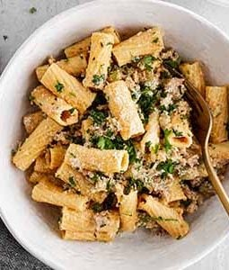

Fennel Sausage Rigatoni Pasta

This is the big one. I cant take any credit for this as I discovered this one at my
dear friend Lauras 30th birthday. Her good friend from South Africa (her home) made This
plate of fennelly spicy sausagy goodness for us and my life hasnt been the same since.
The sweetness of the fenel, richness from the cream and sausage and tang from the tomato and
chilli flakes work to create the ultimate dinner time comfort food.
Ingredients
- 1 Onion
- 3 Sticks of Celery/1 Fennel
- Chilli Flakes
- Fennel Seeds
- 2 Cups Double Cream
- 150ml White Wine
- 400g Sausage Meat
- 500g Rigatoni Pasta
- Minced Garlic
- 200g Parmesan
- 2 Tablespoons Tomato Paste
- 1/2 Cup Chopped Fresh Parsely
Cooking Instructions
- In large Dutch oven or other heavy-bottomed pot over medium heat, heat oil.
Add fennel and onion and cook, stirring often, 7 to 9 minutes until soft.
Add sausage; cook 7 to 9 minutes, crumbling as you cook, until sausage is
cooked through and browned. Add garlic, crushed fennel seeds, red pepper flakes,
2 teaspoons salt and 1 teaspoon black pepper. Cook for 1 minute, then pour
in white wine. Bring to boil. Add heavy cream, half-and-half and tomato paste.
Return to boil, then reduce heat and simmer 20 minutes, stirring occasionally,
until sauce thickens.
- Meanwhile, bring large pot of water to boil. Add 2 tablespoons salt to boiling
water, then add rigatoni pasta. Cook according to package directions. Drain and
add to sauce; stir to coat pasta.
- Off heat, stir in 1/4 cup parsley and 1/2 cup Parmesan cheese.
Serve topped with remaining parsley and Parmesan cheese.